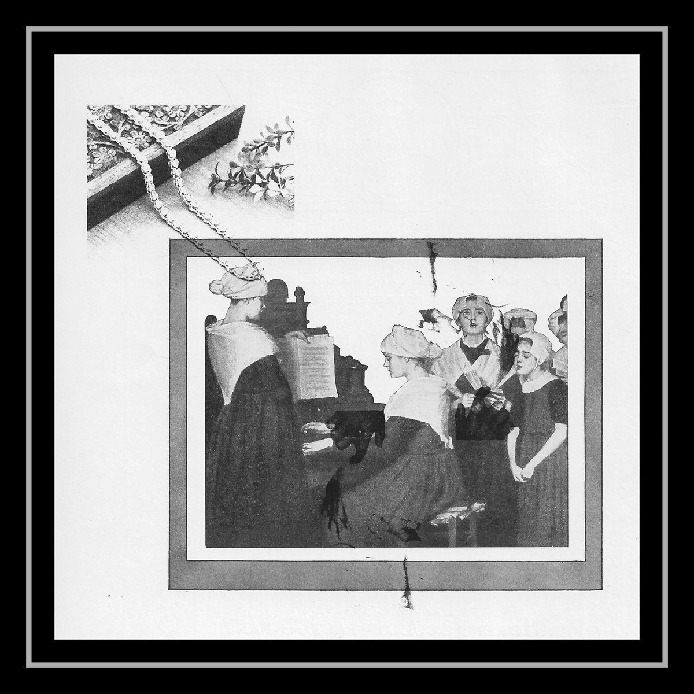

brandon dunlap - offering dish
catalog: ar-007
year: 2020
format: cassette
Two meditations for acoustic guitar, bells, and tape players. Some inspiration from devotional/religious music in vulernable improvisation. Recorded in the center of a rotting coil.
1. angel mind let me pass through
2. trial of laughter
2. trial of laughter
*** sold out ***